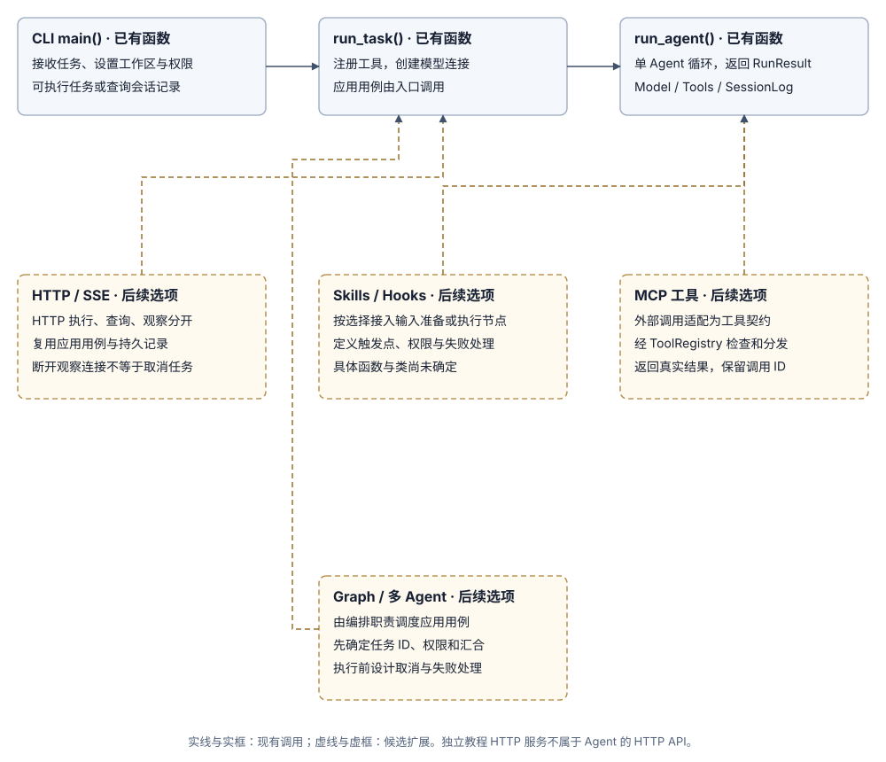

阶段 7：中断后怎样安全继续
当进程在任务执行途中意外中断时，“继续新一轮对话”和“从中断点恢复未完成任务”是两回事。本阶段聚焦如何在不产生重复副作用的前提下安全恢复任务。
1. 问题起点：为什么保存了历史还不等于能安全恢复？
考虑工具调用途中的中断场景：
- 模型：提出调用
write_file或外部创建接口。 - （程序已发出请求或完成文件写入，但在将回执写入日志前进程崩溃）
此时日志里只有“模型发起了调用”，没有回执。如果重启后盲目重放该调用，就会导致文件被重复修改或外部订单被重复创建。因此必须区分两类数据：
- 检查点（Checkpoint）：记录任务暂停在哪一步、哪些步骤已确认完成。
- 动作执行凭据（Receipt）：核对外部动作是否已经实际生效——网络超时或缺少日志回执，绝不能直接等价于“动作未发生”。
2. 恢复流程设计：从只读恢复到副作用核对
2.1 现有记录与恢复模块的关系
当前状态：已有会话持久化与查询，尚无中断恢复入口。现有 run_agent() 会在异常时写入 failed 记录并停止；后续恢复机制需在 阶段 3 会话记录 的基础上，新增未结束任务识别与外部状态核对流程。

2.2 恢复一次中断任务的执行步骤
- 独立恢复入口：通过专门的恢复命令读取指定未结束任务的进度与动作记录，不与普通“继续提问”入口混用，更不能简单把状态强行改成
completed。 - 判断动作状态：区分待恢复动作处于“尚未派发”“已确认完成”还是“结果未知”——已完成动作直接复用已有回执；结果未知动作必须先核对外部实际状态。
- 重新校验权限与执行：若确需重新读取文件，须按当前
Policy重新检查权限，再经ToolRegistry执行，并将最新读取结果作为新观察记录下来。 - 持久化恢复进度：保存核对或重做后的结果，再继续推进模型循环。若涉及写入或外部变更动作，还需为每次逻辑调用（Invocation）绑定唯一幂等键与尝试记录（Attempt）。
2.3 需要在会话记录外补充哪些状态
阶段 3 的记录格式仅保存会话头、Turn 起止与完整消息。要实现可靠恢复，还需记录：恢复位点（Checkpoint）、逻辑动作 ID（Invocation ID）、每次尝试记录（Attempt）以及派发／确认状态，不能直接把消息日志当成重放脚本。
2.4 恢复练习范围
先从只读工具的中断恢复开始，验证从已确认步骤重建运行状态；再扩展到带副作用的写入动作，先核对结果再决定是否重试。
3. 故障注入测试场景
在以下四个关键节点人工注入中断，验证恢复逻辑的判断行为：
- 动作派发前中断：模型已返回调用请求，但工具尚未执行。
- 动作执行中／返回前中断：工具已开始执行或已完成底层操作，但尚未返回结果。
- 收到结果但未落盘前中断：工具已返回
ToolResult，但尚未写入会话记录。 - 结果落盘后、下一轮模型请求前中断：工具回执已写入磁盘，但尚未发起下一轮模型调用。
4. 期望达到的效果
- 四种操作状态严格区分：程序能准确识别“尚未发出”“已完成”“仍在运行”和“结果未知”四种状态。
- 未知状态零盲目重试：对于“结果未知”的有副作用操作，先核对外部状态或报错交人工确认，绝不无条件自动重试。
- 已确认步骤不重复执行：已有完整回执的步骤在恢复时直接复用记录，不重复消耗工具或模型算力。